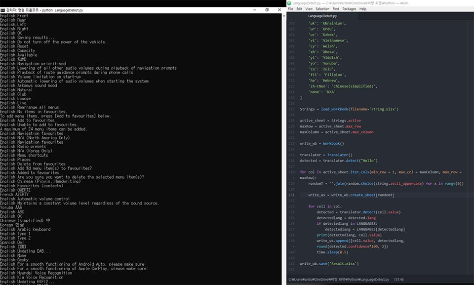
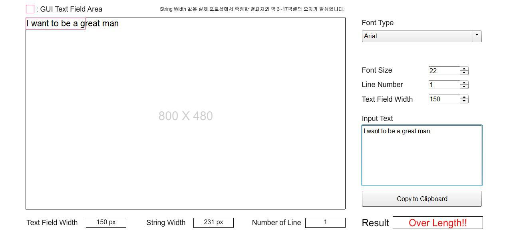

WORKS
취미로 만화나 일러스트를 그리고, 가끔 어플리케이션 코딩을 합니다. 간단한 3D 모델링도 하지만, 자주 하지는 않아요. ^^;
몇 가지 작업들을 올려봅니다. 앞으로 꾸준히 할 수 있도록 응원해 주세요.

PROGRAM
언어 감지
엑셀에 입력된 언어가 어떤 종류의 언어인지 판단하는 프로그램 입니다.
Python을 사용했고, Google Translation API를 사용했는데, 의외로 굉장히 쉽게 되어서 스스로 놀랐네요.
Python을 사용했고, Google Translation API를 사용했는데, 의외로 굉장히 쉽게 되어서 스스로 놀랐네요.
DESIGN
자동차용 AI 스피커 로봇: MOBOT
감정을 표현하면서 자동차에 탈착이 가능하고, 휴대용으로도 사용 가능한 소셜로봇을 컨셉으로 만들어 봤네요.
3D Studio Max와 V-Ray Renderer를 사용했습니다.
3D Studio Max와 V-Ray Renderer를 사용했습니다.
ARTWORK
Lineage2: Elf
리니지2 엘프에 대한 3D 그래픽을 손으로 다시 그려보았습니다.
고등학교 시절 동아리 후배 축전으로 그렸었는데, 얼굴 쪽을 그릴 때 힘이 빠져서 그 쪽은 좀 대충 했네요.
고등학교 시절 동아리 후배 축전으로 그렸었는데, 얼굴 쪽을 그릴 때 힘이 빠져서 그 쪽은 좀 대충 했네요.

PROGRAM
다국어 길이 측정
텍스트 영역에 다국어가 들어갈 수 있는지 여부를 계산하기 위한 프로그램 입니다.
현업에서 많이 필요할 것 같아서 만들어 보았습니다. Flash를 사용했고, Action Script 3.0으로 제작했습니다.
현업에서 많이 필요할 것 같아서 만들어 보았습니다. Flash를 사용했고, Action Script 3.0으로 제작했습니다.